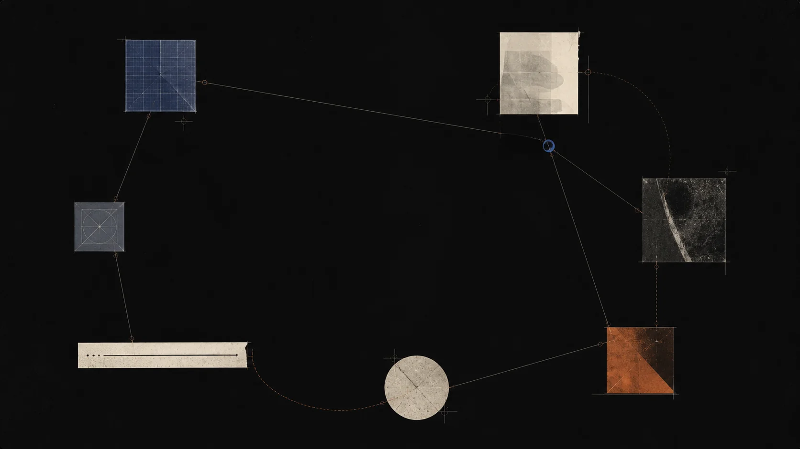

记忆
测试哪些小条件能让一个想法被回忆，而不仅仅是被认出来。
测试哪些小条件能让一个想法被回忆，而不仅仅是被认出来。
观察当学习者必须用自己的话讲清楚一个想法时，究竟发生了什么变化。
探索回来的节奏、有效的困难，以及给思考留下空间的停顿。
研究一条可见的主题路径，如何帮助学习者找到下一个有用的连接。
设计对学习者所说内容保持好奇的 AI 引导，而不只是对答案做反应。

我们从一个克制的问题开始：怎样让这个想法更容易在明天重新回来？
我们公开方法、原型和工作笔记，让答案能被学习者、教师，以及所有想建立更持久思考方式的人使用。